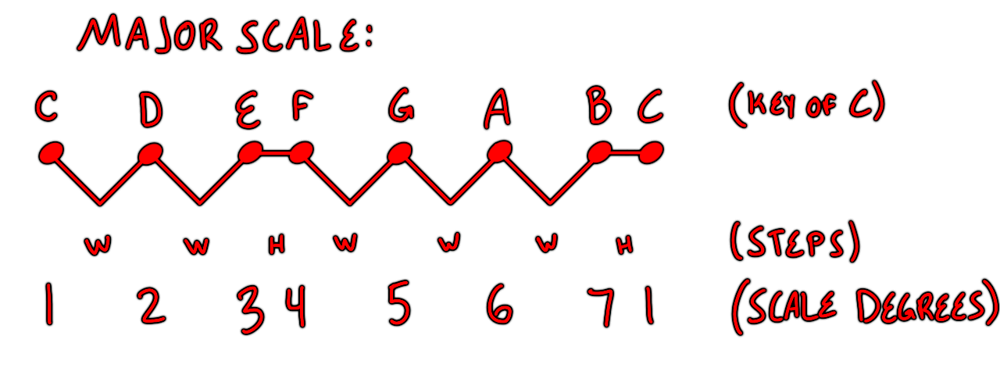
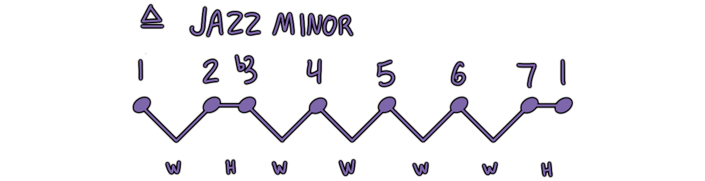
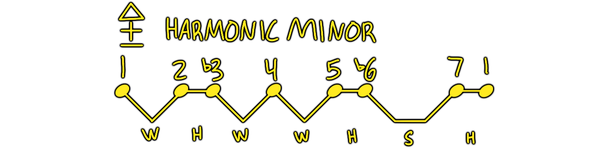
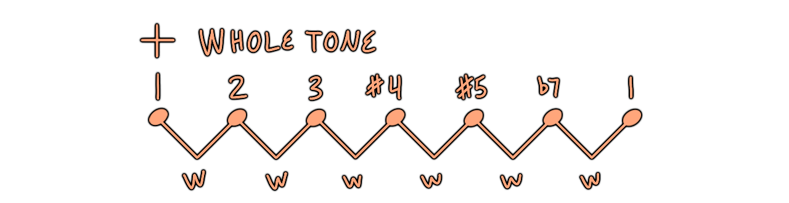
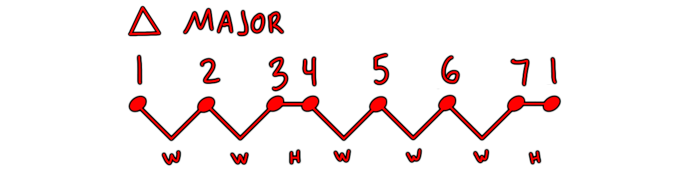

Scales
•A series of steps from a key center to its octave.
•99% of the concepts in Music theory are based off of the major scale.
•Other scales are considered alterations thereof.

•Scale Degrees are a key agnostic abstraction made by numbering the notes of a scale.
•It doesn't matter what key the scale is, the pattern of scale degrees never changes.
Rules for building major scales:
•Use all letters of the musical alphabet (A-G) once and only once.•Don't mix sharps and flats.
More common scales:



And there are Pentatonic scales
•Penta [greek] 'five'
•tonic [greek] 'tone {note}'
We derive pentatonic scales from the major scale by removing the 4th and 7th scale degrees.
But we can also find them in the unused notes of the major scale (or all 5 black keys on the piano)

Now we can add in a 'blue' note, which is a chromatic passing tone that gives us the Blues scale